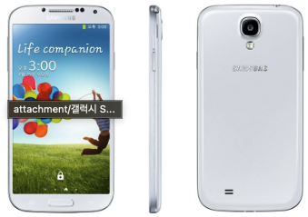

Park Gyeol
/ student
자기소개
취미
활동
SNS
GALAXY S3
GALAXY S4
GALAXY S5
GALAXY S6
GALAXY S7
GALAXY S8
GALAXY S9
GALAXY S10
GALAXY S20
GALAXY S21
GALAXY S4
 갤럭시 S4는 일단 삼성이 아라비아 숫자를 사용한 첫 번째 스마트폰이었습니다. 또한 LTE-A를 지원했었습니다.
갤럭시 S3랑 비교했을 때 단순 CPU의 코어 개수만 보더라도 쿼드에서 옥타 코어가 되었기 때문에
성능 면에서 업그레이드가 있었고 요즘 스마트폰들과 비교해도 오히려 더 얇을 정도로 얇은 두께를 가지고 있었습니다.
갤럭시 S3와 비슷한 크기이지만 화면은 0.19인치 늘었고 갤럭시 S3와 동일하게 탈착식 배터리를 가지고 있었습니다.
배터리 또한 500mAh가 증가한 2600mAh를 탑재했었습니다. 카메라 또한 800만 화소에서 1300만 화소로 업그레이드가 되었습니다.
스펙시트를 봤을 때는 갤럭시 S3의 완성형 모델이라고 생각이 들었고 실제로도 맞았습니다.
하지만 실제로 봤을 때 가장 크게 느껴진 부분은 디스플레이였습니다. 디스플레이 자체도 720P에서 1080P로 늘었기도 했지만
픽셀을 특이하게 마름모꼴로 배치해서 엄청나게 선명한 화면을 느낄 수 있었습니다.
갤럭시 S4만의 특징은 아니지만 이때 추가된 기능 중에서 가장 인상 깊었던 기능 두 가지가 있었습니다.
첫 번째는 Group Play였습니다. 이 기능은 가까이에 있는 갤럭시 스마트폰끼리 같은 음악을 공유해서 틀어주는 기능이었는데
이때 당시에는 스마트폰에 스테레오 스피커가 들어가지 않았기 때문에 여러 개의 스마트폰들로 스테레오 스피커를 경험할 수 있었습니다.
두 번째는 뷰 커버입니다. 사실 갤럭시 S3 때도 정품 플립커버가 있었습니다.
하지만 갤럭시 S4 뷰 커버는 정면에 구멍을 뚫어서 커버가 닫힌 것을 인식하면 정면에 뚫린 화면으로 간단한 정보들을 띄워주는 기능이었습니다.
이때는 플립커버를 사용하는 사람들이 많았었기 때문에 좋은 기능이었습니다.
갤럭시 S4를 홍보한다면 앞서 실제로 봤을 때 가장 크게 느껴진 화면과 전작 대비 훨씬 더 완벽해진 하드웨어 스펙을 들 수 있을 것 같습니다.
또한 정품 플립커버를 산다면 사용할 수 있는 뷰 커버 기능도 홍보하면 좋을 것 같다는 생각을 해봤습니다.